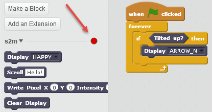
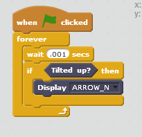

Troubleshooting s2m
Here are some common areas to check if s2m is not working as expected.
-
Startup Problems
a. Check that your USB cable is plugged into both the micro:bit and your computer.
b. Make sure that you have uploaded the latest copy of s2mb.py to the micro:bit. Refer to the installing s2mb.py for details on how to install the script.
-
Connectivity Issues
a. If you are able to start s2m without issue, but lose connectivity while running a Scratch project (the connectivity indicator goes from green to red), while in a loop:

add a small "wait" delay to the loop.
